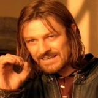
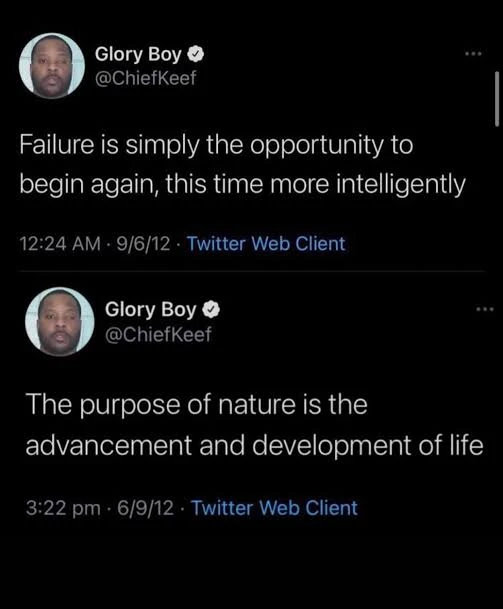

I think there will come a time when we all look at social media differently.
Creo que va a llegar un momento en el que todos vamos a ver las redes sociales de otra manera.
Maybe I'm getting older. Maybe I'm just spending too much time online. Either way, I've been paying more attention to the way I use social media lately, especially now that I have a lot more free time than usual.
Tal vez ya estoy envejeciendo. Tal vez nada más ando pasando mucho tiempo en línea. De cualquier forma, últimamente le he estado poniendo más atención a cómo uso las redes sociales, sobre todo ahora que tengo mucho más tiempo libre de lo normal.
Like most people, I know there's a problem with overconsumption. Endless scrolling, short attention spans, algorithms feeding us content we didn't ask for. We've heard it all before.
Como la mayoría de la gente, sé que hay un problema de sobreconsumo. Scroll infinito, poca capacidad de atención, algoritmos que nos avientan contenido que ni pedimos. Ya lo hemos escuchado mil veces.
But what keeps bringing me back? This question made me think about the kind of content I consume today compared to five years ago.
¿Pero qué es lo que me hace regresar? Esa pregunta me hizo pensar en el tipo de contenido que consumo hoy comparado con hace cinco años.
Back then, I was deep into what I considered funny content, shitposting, and whatever absurd thing the internet was laughing at that week. I was constantly posting memes (I still do, just not as much). Most of my online experience revolved around being entertained, and that's it.
En ese entonces, andaba metido en lo que yo consideraba contenido chistoso, shitposting, y lo que sea absurdo de lo que se estuviera riendo el internet esa semana. Andaba posteando memes todo el tiempo (todavía lo hago, nada más que no tanto). Mi experiencia en línea giraba casi por completo en torno a entretenerme, y ya, eso era todo.

Now, I find myself stopping for completely different things. It could be a photo of a tree with a cool song in the background. A nostalgic football edit. Local news from my hometown. Random stuff like that somehow feels more meaningful to me. It catches my attention more than another meme across my timeline.
Ahora me encuentro deteniéndome por cosas completamente diferentes. Puede ser una foto de un árbol con una canción perfecta de fondo. Un edit nostálgico de fútbol. Noticias locales de mi ciudad. Cosas random como esas que de alguna manera se sienten más significativas para mí. Me llaman más la atención que otro meme más pasando por mi timeline.
But don't get me wrong... I still enjoy the occasional meme or joke, but something changed. And I don't think it's just me. I think it's just the way we share content on social media now... we've all become more aware of what we're putting out there.
Pero que no se me malinterprete... todavía disfruto el meme o chiste ocasional, pero algo cambió. Y no creo que sea nada más yo. Creo que es nada más la forma en la que compartimos contenido en las redes sociales ahora... todos nos volvimos más conscientes de lo que estamos poniendo ahí afuera.
Using Multiple Accounts
Usando Varias Cuentas
A lot of people (me included) have gotten more aware of who's seeing and interacting with the stuff they post. You don't need a big following to feel like there's some judgment coming your way.
Mucha gente (yo incluido) se ha vuelto más consciente de quién está viendo e interactuando con lo que publica. No necesitas tener muchos seguidores para sentir que hay algo de juicio viniendo hacia ti.
Like, I'm probably not posting about the time I got drunk at a bar with my friends last week. What would my 'tia' think about that? She'd probably assume I do that every day (I wish), but I'm not blocking her either, lol.
Por ejemplo, seguramente no voy a postear sobre la vez que me emborraché en un bar con mis amigos la semana pasada. ¿Qué pensaría mi tía de eso? Probablemente asumiría que hago eso todos los días (ojalá), pero tampoco la voy a bloquear, jaja.
So to avoid feeling uncomfortable sharing certain stuff with "everyone," a lot of people create spam accounts/privates. That's where I've seen the funniest, most organic, and honestly coolest stories from my mutuals. I feel privileged in some ways to be added to them. Like, why are you hiding this version of you from everyone else?
Entonces, para no sentirse incómodo compartiendo ciertas cosas con 'todo el mundo', mucha gente crea cuentas spam o privadas. Ahí es donde he visto las historias más chistosas, más orgánicas, y honestamente las más chidas de mis mutuals. Me siento medio privilegiado de que me hayan agregado a algunas. Como que, ¿por qué esconden esta versión de ustedes de todos los demás?
In my case, I use a pretty common replacement for the spam account: my main account, with a close friends list. It's mostly people who won't judge me if I post something really stupid or controversial, plus anyone I've recently started liking or want to get to know better. It still feels like I'm using two accounts.
En mi caso, uso un reemplazo bastante común para la cuenta spam: mi cuenta principal, con una lista de close friends. Es sobre todo gente que no me va a juzgar si publico algo bien estúpido o controversial, más cualquiera que haya empezado a gustarme recientemente o que quiera conocer mejor. Aun así siento que estoy usando dos cuentas.
And I know there are people who have both a close friends list and a spam account. Be careful with those people. What version of themselves are they hiding even from their close friends? Really makes you think...
Y sé que hay gente que tiene tanto lista de close friends como cuenta spam. Aguas con esas personas. ¿Qué versión de ellos mismos están escondiendo hasta de su close friends? De verdad te hace pensar...
Anyway, my point is that people use social media to share their lifestyle or persona, just not with everyone, and that's okay. I'm people too. But I also admire the ones who are fearless enough to post anything without feeling judged. I think the goal is to feel more free online, more 'you', because of the impact social media can have, and will keep having, on how we're seen.
De todos modos, mi punto es que la gente usa las redes sociales para compartir su estilo de vida o su persona, nada más que no con todo el mundo, y está bien. Yo también soy así. Pero también admiro a los que son lo suficientemente valientes para postear lo que sea sin sentirse juzgados. Creo que la meta es sentirse más libre en línea, más 'tú', por el impacto que las redes sociales pueden tener, y van a seguir teniendo, en cómo nos ven.
Imagine, like, ten years from now. Some of us could have kids by then (or die), and if they saw whatever you're posting today, would they be proud of you? Like what if they went through your spam account and saw you ranting about your job? They'd get to know you more, right? But what if all they had was your main account with two posts? They'd be like, nah, my mom/dad was so boring.
Imagínate, tipo, dentro de diez años. Algunos ya podríamos tener hijos para entonces (o estar muertos), y si vieran lo que sea que estás posteando hoy, ¿estarían orgullosos de ti? Como, ¿qué tal si entran a tu cuenta spam y te ven quejándote de tu trabajo? Te conocerían mejor, ¿no? ¿Pero qué tal si nada más tuvieran tu cuenta principal con dos posts? Dirían, no manches, mi mamá/papá era bien aburrido.
Moral of the story: if you're planning on having kids someday, maybe make sure you're posting the stuff you'd actually want them to see. And maybe when they're older, you tell them you had a spam or meme account, and they can still respect you.
Moraleja de la historia: si estás planeando tener hijos algún día, tal vez asegúrate de estar posteando las cosas que sí quieres que vean. Y tal vez cuando sean más grandes, les cuentas que tenías una cuenta spam o de memes, y aun así te van a respetar.
I also imagine what it would've been like if social media existed when my parents were young, so I could see what they would've posted. I feel like they have a lot of cool stories or pictures they've forgotten, or just don't want to talk about.
También me imagino cómo hubiera sido si las redes sociales hubieran existido cuando mis papás eran jóvenes, para poder ver qué hubieran posteado. Siento que tienen un montón de historias o fotos padrísimas que se les olvidaron, o que de plano no quieren contar.
That's why I think we're missing the bigger picture about social media. Eventually it's going to become this big memories platform, something to share with our close ones and outsiders too. It will make it easier for people to understand who we were in the future. But it could also be dangerous, depending on how the content is received. It could make you look bad. And that's probably why I feel like I see more people trying to get rid of it.
Por eso creo que se nos está escapando el panorama completo de las redes sociales. Eventualmente se va a convertir en esta gran plataforma de recuerdos, algo para compartir con la gente cercana y hasta con quienes no lo son tanto. Va a hacer que sea más fácil para la gente entender quiénes fuimos en el futuro. Pero también podría ser peligroso, dependiendo de cómo se reciba el contenido. Te podría hacer ver mal. Y por eso creo que veo a más gente tratando de alejarse de ellas.
What Kind of Content I Consume
Qué Tipo de Contenido Consumo
I compared the type of content I've been consuming over the past five years and noticed how it evolved into something more existential and reflective. There's definitely more nostalgia involved now, and I feel like there's a bigger trend toward that kind of content too. We've reached a point where I can dig up old tweets or archived ig posts and just feel nostalgic looking at them.
Comparé el tipo de contenido que he estado consumiendo en los últimos cinco años y noté cómo evolucionó hacia algo más existencial y reflexivo. Definitivamente hay más nostalgia involucrada ahora, y siento que hay una tendencia más grande hacia ese tipo de contenido también. Hemos llegado a un punto en el que puedo desenterrar tweets viejos o posts archivados de ig y nada más sentir nostalgia viéndolos.
It also feels like we're circling back to the same thoughts. Maybe we're becoming nostalgic for the same things at the same time. I'm not saying this is necessarily bad, but sometimes it makes new content feel a little more bland and inauthentic. I may sound like an old head, but maybe this new 'algorithm' could've changed us more than we realize.
También se siente como que estamos regresando a los mismos pensamientos. Tal vez nos estamos volviendo nostálgicos por las mismas cosas al mismo tiempo. No digo que esto sea necesariamente malo, pero a veces hace que el contenido nuevo se sienta un poco más soso y poco auténtico. Tal vez sueno como un viejito, pero tal vez este nuevo 'algoritmo' nos cambió más de lo que nos damos cuenta.
I'm also not trying to sound like I'm on some spiritual/woke shit, but I think it's worth asking yourself: what are you actually looking for when you open social media nowadays? For me, it's still mostly entertainment, but there's also a layer of self reflection mixed in. It's a combination of stupid and serious things. I try to keep it balanced lol.
Tampoco estoy tratando de sonar como que ando en alguna onda espiritual o woke, pero creo que vale la pena preguntarte: ¿qué es lo que realmente estás buscando cuando abres las redes sociales hoy en día? Para mí, sigue siendo sobre todo entretenimiento, pero también hay una capa de reflexión personal mezclada ahí. Es una combinación de cosas estúpidas y serias. Trato de mantenerlo balanceado, jaja.
For instance, I saw a reel the other day with highlights of Diego (a really good forgotten baller) with a deep existential caption. I never thought I'd see the day I felt connected to something like that. The nostalgia, the caption, and the music all came together perfectly. It was exactly the kind of content I find myself connecting with nowadays. But a few minutes before, I was laughing at a random video I posted on my meme account. And that's me.
Por ejemplo, el otro día vi un reel con highlights de Diego (un baller bien bueno y medio olvidado) con una caption bien existencial. Nunca pensé que iba a llegar el día en que me sintiera conectado con algo así. La nostalgia, la caption, y la música se combinaron perfecto. Era exactamente el tipo de contenido con el que me encuentro conectando hoy en día. Pero unos minutos antes, andaba muerto de risa con un video random que publiqué en mi cuenta de memes. Y así soy yo.
I felt like I understood what social media had become for me: a place to understand and share parts of my identity. And maybe that's why I started this website in the first place.
Sentí que entendí en qué se habían convertido las redes sociales para mí: un lugar para entender y compartir partes de mi identidad. Y tal vez por eso empecé este sitio web desde un principio.
Lately, posting here feels more natural than posting on social media. Less performance, more intention.
Últimamente, publicar aquí se siente más natural que publicar en redes sociales. Menos actuación, más intención.
My goal isn't necessarily to quit social media tomorrow. But I do want to spend less time consuming and more time creating. Maybe this website is my attempt at doing that.
Mi meta no es necesariamente dejar las redes sociales mañana. Pero sí quiero pasar menos tiempo consumiendo y más tiempo creando. Tal vez este sitio web es mi intento de hacer eso.
And maybe one day I'll get rid of social media altogether. Who knows.
Y tal vez algún día me deshaga de las redes sociales por completo. Quién sabe.

I just miss the old Twitter days, man. Good night.
Nada más extraño los días viejos de Twitter, wey. Buenas noches.
Say something back
thoughts, opinions, recommendations, whatever comes to mind.